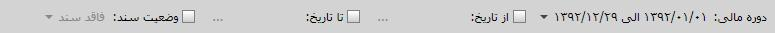

کلیک کنید تا فرم صدور سند باز شود.
کلیک کنید تا فرم صدور سند باز شود.

همان طور که مشاهده می کنید صفحه ی بالا شامل چهار کادر
می باشد که در زیر به توضیح موارد هر کادر می پردازیم
کادر شماره 1:
در این کادر می توانید دوره مالی مد نظر را تعیین کنید،
با انتخاب گزینه ی از تاریخ - تا تاریخ
می توانید بازه ی زمانی مورد نظر را انتخاب کنید،
در قسمت وضعیت سند اگر دارای سند را انتخاب کنید
عملیات هایی که دارای سند هستند در کادر شماره ی
سه نمایش داده می شوند و اگر گزینه ی فاقد سند را انتخاب کنید
عملیات هایی که فاقد سند هستند را در کادر شماره ی سه
مشاهده می کنید
کادر شماره 2:
در تبهای این کادر سیستم هایی که دارای سند خودکار می باشند
را مشاهده می کنید، اگر هر یک از تب های موجود در این کادر
را انتخاب کنید در کادر شماره ی سه سند های ارسالی آن را مشاهده می کنید
کادر شماره 3:
بعد از اینکه سیستم مورد نظرتان را از کادر شماره ی دو انتخاب کردید
اگر در کادر شماره ی یک وضعیت سند در حالت دارای سند باشد همه ی سند های ارسال
شده از سیستم مورد نظر در این کادر نمایش داده می شود
کادر شماره 4:
این کادر شامل پنج گزینه می باشد که در زیر به شرح هر یک می پردازیم :
عکس
عکس
عکس
عکس
عکس
همان طور که در شکل بالا مشاهده می کنید تب های
مربوط به هر یک از اتوماسیون های دیگر با کادر قرمز
مشخص شده اند با انتخاب هر اتوماسیون می توانید
اسنادی را که در آن ثبت شده اند را مشاهده کنید.
(در شکل بالا اتوماسیون «خرید و فروش» انتخاب شده است.)
همچنین می توانید برای
هر سند، سند حسابداری نیز صادر کنید برای این کار
سند مورد نظر را انتخاب کنید و سپس از قسمت پایین
صفحه جمع آوری و بایگانی اسناد مثبته، روی دکمه
کلیک کنید تا فرم صدور سند باز شود.
با تعیین حساب کل
و معین مورد نظر مطابق با سند انتخاب شده
می توانید با کلیک روی گزینه «ثبت سند»
 (Ctrl + Enter) سند حسابداری را ثبت
کنید.(اگر الگو تعریف کرده
باشید سیستم به طور خودکار
طبق الگوی ایجادی حساب کل
و معین را انتخاب می کند.)
(Ctrl + Enter) سند حسابداری را ثبت
کنید.(اگر الگو تعریف کرده
باشید سیستم به طور خودکار
طبق الگوی ایجادی حساب کل
و معین را انتخاب می کند.)
همچنین می توانید با کلیک روی گزینه
 ، در صورتی که سند مثبته
انتخابی دارای سند حسابداری باشد آن سند
را مشاهده کنید و یا با کلیک روی گزینه
، در صورتی که سند مثبته
انتخابی دارای سند حسابداری باشد آن سند
را مشاهده کنید و یا با کلیک روی گزینه
 ، سند حسابداری صادر شده
برای سند مثبته انتخابی را حذف کنید.
، سند حسابداری صادر شده
برای سند مثبته انتخابی را حذف کنید.
با استفاده از شکل زیر که قسمتی از صفحه جمع آوری و بایگانی اسناد مثبته است می توانید لیست اسناد سیستم هایی که انتخاب شده اند را فیلتر بندی کنید.

اگر دوره های مالی مختلف داشته باشید می توانید با انتخاب دوره مالی مورد نظر از این قسمت لیست اسناد صادر شده در آن دوره را مشاهده کنید.

برای آن که بتوانید فقط اسناد صادر شده در یک بازه زمانی خاص را مشاهده کنید می توانید از این قسمت بازه دلخواه را انتخاب کرده و اسناد مرتبط با آن بازه را مشاهده نمایید.

اگر «دارای سند» را انتخاب کنید فقط اسنادی نمایش داده می شود که برای آن ها سند حسابداری ایجاد کرده اید و اگر «فاقد سند» را انتخاب کنید اسنادی که برای آنها سند حسابداری محاسبه نشده است به نمایش در می آید.